Module 09 — Gestion des espaces de stockage — File System¶
La transcription du support Drive et l’aide pédagogique sont séparées pour rendre leur provenance explicite.
SOURCE DRIVE · TRANSCRIPTION DU SUPPORT
Le contenu des documents du dossier TSSR est transcrit ci-dessous, page par page. Les textes et tableaux sont intégrés à la page Web. Aucun fichier PDF, aucune diapositive entière ni aucune reproduction de page n’est affiché. Seuls des croquis ou visuels isolés et vérifiés peuvent accompagner la transcription. Les versions et les consignes restent celles des supports de formation. Les compléments IA sont conservés dans leur onglet distinct.
Support · RES24_0050B - M09 - Linux Administration (Debian) · 43 pages transcrites
Administration Debian
GNU/Linux
Module 09 – Gestion des espaces de stockage – File System
Gestion des espaces de stockage – File System
Objectifs
- Découvrir des systèmes de fichiers Linux
- Appliquer des FS sur l’espace de stockage
- Gérer les systèmes de fichiers
- Monter les systèmes de fichiers
Préparer le stockage à recevoir des données
Gestion des espaces de stockage – File System
Considérations générales sur les systèmes de fichiers
Considérations générales
- Tous les systèmes de fichiers de type Unix sont basés sur le même principe et les mêmes éléments élémentaires. Les systèmes de fichiers Unix sont segmentés en blocs de données, actuellement à 4 Ko par défaut
- Chaque bloc pourra avoir différentes structures :
- Superbloc : bloc contenant les informations vitales du système de fichiers
- Inode : bloc contenant les inodes contenant les informations d’un fichier
- Bloc d’indirection : bloc redirigeant vers d’autres blocs (cf. plus loin dans ce chapitre)
- Bloc de données : bloc contenant les données réelles du fichier
- Table des inodes : bloc contenant la liste des blocs d’inodes
- Table des inodes libres : bloc contenant la liste des inodes libres
- Table des blocs libres : bloc contenant la liste des blocs de données libres
Le Superbloc
- Le superbloc contient les informations vitales du système de fichiers. Donc par mesure de sécurité, il est dupliqué à différents endroits du système de fichiers. Il contient les informations suivantes :
- Taille des blocs
- Taille du système de fichiers
- Nombre de montages effectués
- Nombre maximum de montages avant vérification
- Date de dernier montage
- Intervalle maximum entre deux montages avant vérification
- Un pointeur vers l’inode racine du système de fichier
Inodes et bloc d’indirection
- Les inodes sont regroupés par bloc dans un système de fichiers. La taille d’un inode est de 128 octets. Avec des blocs de 4 Ko, il y aura 32 inodes par bloc d’inodes. Un inode contient des informations propres au fichier qu’il représente :
- Type de fichier : -,d,b,c,l,p,s
- Mode ou droit d’accès : en octal, ex : 0644 (rw-r--r--)
- Nombre de liens physiques : si la valeur tombe à zéro, le fichier est considéré comme supprimé.
- UID : propriétaire
- GID : groupe propriétaire
Inodes et bloc d’indirection
- Taille du fichier : en octets
- Champs date : atime (dernier accès au fichier), ctime (dernier changement des informations de l’inode), mtime (dernier changement de données réelles du fichier)
- 15 adresses : pointant vers les blocs de données réelles du fichier
L’inode ne possède pas le nom du fichier, celui-ci est renseigné dans le répertoire contenant ce fichier.
Gestion des espaces de stockage – File System
Systèmes de fichiers
Linux
Systèmes de fichiers EXT
- L’ext2, l’ext3 et l’ext4 sont implémentés sur un système Debian
- La différence entre ext2 et ext3 est la journalisation, améliorant la récupération du système de fichier en cas de crash (extinction brutale du PC par exemple)
- Le système de fichier ext4 est une amélioration de l’ext3 mais réécrit de zéro
- ext4 est le système de fichier par défaut sur Debian 10.
- Son avantage est qu’il est peu sujet à la fragmentation grâce à la préallocation des blocs de données contigus
Systèmes de fichiers EXT
Caractéristiques :
- Taille maximale de fichier : 16 Tio (avec des blocs de 4 Ko)
- Nombre maximal de fichiers : 4 milliards
- Taille maximale du nom de fichier : 255 octets
- Taille maximale de volume : 1 Eio (limité à 16 Tio par e2fsprogs avec des blocs de 4 Ko)
- D’autres systèmes de fichiers sont gérés sous Debian, entre autres : NTFS, FAT
- Il est bien sûr possible d’installer d’autres outils de gestion de systèmes de fichiers comme XFS, Btrfs, etc.
Gestion des espaces de stockage – File System
Outils de gestion des
systèmes de fichiers
Création de systèmes de fichiers
- Le formatage va installer sur un périphérique de stockage un système de fichier. Sans un système de fichier, le périphérique de stockage est inutilisable
- Un périphérique de stockage peut être une partition (ex: /dev/sdc1) ou un volume logique (ex : /dev/vgsys/lvroot ou /dev/mapper/vgsys- lvhome) ext4 ext4 ext4
/dev/sdc vgsys lvroot lvhome /dev/sdc1
Création de systèmes de fichiers
• mkfs.[fstype] <options> [périphérique de stockage]- mkfs.[fstype]est une commande simplifiant la mémorisation des commandes de création de systèmes de fichiers. C’est en fait une fausse commande qui fait appel à la vraie commande de création
- Exemple : mkfs.ext4 est la commande mke2fs avec des options préconfigurées pour générer de l’ext4
- Pour savoir quelle est la commande utilisée par un mkfs.[fstype], il suffit de consulter la commande man mkfs.[fstype]
Création de systèmes de fichiers
- Création d’un système de fichiers ext4 sur partition /dev/sda2
root@deb:~# mkfs.ext4 /dev/sda2- Création d’un système de fichiers ext4 sur volume logique lv1
root@deb:~# mkfs.ext4 /dev/vggroup1/lv1- Création d’un système de fichiers NTFS (nécessite le paquet ntfs-3g)
root@deb:~# mkfs.ntfs /dev/sde1Modification de systèmes de fichiers
• tune2fs <options> [périphérique de stockage]- tune2fs permet de modifier des options d’un système de fichiers type ext
- Il permet aussi de récupérer les informations du superbloc
- Options usuelles
- -L permet de modifier l’étiquette du système de fichiers
- -l permet d’afficher les informations du superbloc
- -i permet de modifier l’intervalle entre deux vérifications
- -c permet de modifier le nombre maximum de montages déclenchant une vérification
• resize2fs <options> [périphérique de stockage]- resize2fs permet de changer la taille d’un système de fichiers
Vérification d’un système de fichiers
• fsck.<fstype> <options> [périphérique de stockage]- La vérification d’un système de fichiers permet de contrôler l’intégrité des données présentes sur celui-ci
- Il est possible de le faire manuellement tout comme il est possible de l’automatiser au démarrage
- Comme pour les commandes de formatage, la vérification peut facilement se faire avec les commandes fsck.<fstype>
Prise d’information
• blkid <options> [périphérique de stockage]- La commande blkid permet d’afficher les informations relatives à un périphérique particulier. Sans argument, elle affichera les informations relatives à tous les périphériques formatés
root@deb:~# blkid
/dev/sda1: UUID="32a0cf22-91d5" TYPE="ext2" PARTUUID="732e6aa1-01"
/dev/sda5: UUID="VDfsmc-gci2" TYPE="LVM2_member" PARTUUID="732e6aa1"
/dev/sr0: UUID="2021" LABEL="Deb10" TYPE="iso9660 PTUUID="49506c1e" PTTYPE="dos"
/dev/mapper/vgsys-lvroot: UUID="bffe9183-34a3" TYPE="ext4"
/dev/mapper/vgsys-lvswap_1: UUID="d5d6cc72-21ed" TYPE="swap"Prise d’information
- lsblk <options> [périphérique de stockage]
- La commande lsblk permet d’afficher sous forme arborescente les informations relatives aux périphériques et aux systèmes de fichiers.
root@deb:~# lsblk
NAME MAJ:MIN RM SIZE RO TYPE MOUNTPOINT
sda 8:0 0 20G 0 disk
├─sda1 8:1 0 243M 0 part /boot
├─sda2 8:2 0 1K 0 part
└─sda5 8:5 0 19,8G 0 part
├─vgsys-lvroot 254:0 0 17,8G 0 lvm /
└─vgsys-lvswap 254:1 0 2G 0 lvm [SWAP]
sr0 11:0 1 3,4G 0 rom /media/cdrom0Prise d’information
root@deb:~# lsblk -f
NAME
FSTYPE LABEL UUID
MOUNTPOINT
sda
├─sda1
ext2
32a0cf22-91d5-548810a16c45
/boot
├─sda2
└─sda5
LVM2_member
VDfsmc-gci2-R5IA-ozNO8x
├─vgsys-lvroot
ext4
bffe9183-34a3-49d4-b1a4
/
└─vgsys-lvswap
swap
d5d6cc72-10f5-48e4-bd60
[SWAP]
sdb
└─sdb1
ext4
HOME
42237738-92a8-4ddf-9326
/home
sr0
iso9660 Deb10 2021-02-16
/media/cdrom0Outils de gestion des systèmes de fichiers
Démo
Les systèmes de fichiers
Gestion des espaces de stockage – File System
Monter des systèmes de
fichiers
Montage d’un système de fichiers
- Sous un système d’exploitation Linux, comme tout est fichier, la mise à disposition d’un système de fichier venant d’un espace de stockage (partition, LVM, RAID, etc.) se fera en définissant un répertoire comme point de montage
- Ce point de montage sera le chemin par lequel accéder aux données du système de fichier
- Pour un montage temporaire d’un système de fichiers, il est conseillé d’utiliser le répertoire /mnt. S’il faut monter plusieurs systèmes de fichiers de façon temporaire, il est possible de créer des sous-répertoires dans /mnt, pour chacun des systèmes de fichiers
Montage manuel avec mount
• mount <options> [périphérique source] [/point/de/montage]- La commande mount permettra de mettre à disposition un système de fichiers dans un répertoire
- Options possibles :
- -t [fstype] Détermine le type de système de fichiers à monter
- -o [option] Permet de définir différentes options séparées par une virgule
- sync/async Active ou non l’utilisation de la mise en tampon en RAM des données avant écriture dans le système de fichiers. Par défaut : async
Montage manuel avec mount
- Options possibles suite :
- exec/noexec Active la possibilité d’exécuter des fichiers exécutables présents sur le système de fichiers. Par défaut : exec
- ro/rw Monte le système de fichiers en lecture seule ou en lecture/écriture. Par défaut : rw
- suid/nosuid Active la possibilité d’exécuter les binaires avec l’interprétation du SUID positionné dessus. Par défaut : suid
- remount Permet de changer une ou des options de montage sans démonter le système de fichiers.
Montage manuel avec mount
root@deb:~# ls /mnt
root@deb:~# mount –t ext4 /dev/sdc1 /mnt
root@deb:~# ls /mnt
contacts
liste_taches.txt
preparation
root@deb:~#/
/bin
/boot
/etc
/mnt
/var
[...]ext4
/dev/sdc1
Informations sur les montages
- mount La sortie de mount est faiblement lisible mais permet de savoir facilement les options de montage appliquées
root@deb:~# mount
sysfs on /sys type sysfs (rw,nosuid,nodev,noexec,relatime)
[...]
/dev/mapper/vgsys/lvroot on / type ext4 (rw,relatime,errors=remount-
ro,data=ordered)
securityfs on /sys/kernel/security type securityfs
(rw,nosuid,nodev,noexec,relatime)
tmpfs on /dev/shm type tmpfs (rw,nosuid,nodev)
tmpfs on /run/lock type tmpfs (rw,nosuid,nodev,noexec,relatime,size=5120k)
tmpfs on /sys/fs/cgroup type tmpfs (ro,nosuid,nodev,noexec,mode=755)
[...]
/dev/mapper/vgsys/lvhome on /home type ext4 (rw,relatime,data=ordered)
/dev/sdc1 on /mnt type ext4 (rw,relatime,data=ordered)
/dev/sr0 on /media/cdrom0 type iso9660 (ro,nosuid,nodev,noexec,relatime,user)Informations sur les montages
- findmnt permet une meilleure lisibilité et surtout de prendre l’information sur un seul point de montage
root@deb:~# findmnt
TARGET
SOURCE
FSTYPE OPTIONS
/
/dev/mapper/vgsys-lvroot
ext4 rw,errors=remountro
├─ /sys
sysfs
sysfs rw,nosuid,noexec
│ ├─ /sys/kernel/security securityfs rw,nosuid,nodev,noexec
│ ├─ /sys/fs/cgroup tmpfs
tmpfs
[...]
├─ /home
/dev/mapper/vgsys/lvhome
ext4
rw,relatime,data=ordered
├─ /mnt
/dev/sdc1
ext4
rw,relatime,data=ordered
└─ /media/cdrom0
/dev/sr0 iso9660 ro,nosuid,nodev,noexec,relatimeInformations sur les montages
Pour voir l’information sur un seul point de montage, il suffit de le cibler :
root@deb:~# findmnt /dev/sdc1
TARGET
SOURCE FSTYPE OPTIONS
/mnt
/dev/sdc1
ext4
rw,relatime,data=orderedDémonter un volume
• umount [périphérique de stockage] ou
• umount [point de montage] - À faire par exemple pour retirer une clé USB ou disque externe
- Attention, il ne faudra pas qu’un utilisateur utilise le volume monté pour permettre sa déconnexion.
root@deb:~# umount /mntMonter des systèmes de fichiers
Démo
Montage manuel
Gestion des espaces de stockage – File System
Montage automatique des systèmes de fichiers
Montage automatique
Les montages automatiques sont effectués par systemd au tout début du démarrage du système d’exploitation. La déclaration des montages automatiques est présente dans le fichier /etc/fstab.
# /etc/fstab: static file system information.
# <file system> <mount point> <type> <options> <dump> <pass>
/dev/mapper/vgsys-lvroot / ext4 errors=remount-ro 0 1
# /boot was on /dev/sda1 during installation
UUID=32a0cf22-548810a16c45 /boot ext2 defaults 0 2
/dev/vgsys/lvhome /home ext4 defaults 0 2
/dev/mapper/vgsys-lvswap none swap sw 0 0
/dev/sr0 /media/cdrom0 udf,iso9660 user,noauto 0 0Montage automatique
- La section <file system> :
- Cette colonne déclare le système à monter. Cette source peut être exprimée de plusieurs façons :
- Via un UUID, la façon la plus sécurisée mais humainement plus difficile à reconnaître
- Via le LABEL, humainement plus pratique que l’UUID mais il pose un problème en cas de doublon
- Via le chemin du périphérique, on l’utilise principalement pour les LVM car il n’est pas possible d’avoir plusieurs volumes LVM avec le même nom sur un système
- Il est fortement déconseillé de l’utiliser pour des partitions (ex : /dev/sdb1)
- La section <mount point> :
- Cette colonne déclare le répertoire de montage du système de fichiers
Montage automatique
- La section <type> :
- Cette colonne déclare le type de système de fichiers. Il est possible de mettre auto mais cela ralentit le montage des périphériques
- La section <options> :
- Cette colonne déclare les options de montage. Il est possible de mettre defaults
- Les options dans defaults sont : async,nouser,exec,rw,auto,suid,dev
- La section <dump> :
- Cette colonne est très faiblement utilisée. Elle correspond à des paramètres de configuration de la commande dump
- La section <pass> :
- Cette section permet de savoir si le système doit analyser l’intégrité du système de fichiers afin de corriger les problèmes avant de le monter. (commande fsck)
- Si la valeur est à 0 : pas de vérification, si elle est supérieure à 0 alors le système analysera les systèmes de fichiers (1 pour la racine, 2 pour les autres)
Montage automatique
- Afin de garantir la bonne intégration d’une nouvelle ligne dans le fichier /etc/fstab, il est important de la tester avant le redémarrage du poste. Le moyen le plus simple est d’utiliser la commande mount en ne précisant que le point de montage
root@deb:~# mount /srv/data
mount: impossible de trouver /srv/data dans /etc/fstab- Dans cet exemple, la commande indique qu’elle ne trouve pas d’entrée de /srv/data dans le fstab
- Dans le cas où une ligne indique /srv/data dans le fichier fstab alors le montage se fera par rapport aux différentes déclarations
- Si la commande ne renvoie rien, c’est que le montage s’est correctement effectué
Montage automatique des systèmes de fichiers
Démo
Montage automatique
Gestion des espaces de stockage – File System
Commandes
informatives
Informations sur les systèmes de fichiers
- Nous avons déjà utilisé les commandes informatives suivantes :
- blkid permet de récupérer les informations sur les disques, partitions et volumes logiques LVM
- lsblk va donner un affichage plus hiérarchisé de ces mêmes informations
- findmnt offre un affichage hiérarchisé des systèmes de fichiers montés
Informations sur les systèmes de fichiers
• df <options> [/point/de/montage]- La commande df permet de prendre des informations utiles sur les systèmes de fichiers montés
- Options usuelles :
- -h : affiche la taille en puissance de 1024 (K,M,G…)
- -i : affiche les informations sur les inodes
root@deb:~# df -h
Sys. de fichiers
Taille Utilisé Dispo Uti% Monté sur
udev
982M
0
982M 0%
/dev
tmpfs
199M
22M
178M 11%
/run
/dev/mapper/vgsys-lvroot 18G
4,3G
13G 26%
/
[...]Informations sur les systèmes de fichiers
- La commande ls -l ne permet pas de connaître la taille d’un répertoire. En effet, elle remonte juste la taille utilisée par l’inode du répertoire et non son contenu. Pour connaître la taille d’un répertoire, il faut utiliser la commande du du <options> [/point/de/montage]
- Options usuelles :
- -h : affiche la taille en puissance de 1024 (K,M,G…)
- -s : n’affiche pas les sous-répertoires mais uniquement le répertoire en argument
root@deb:~# du –hs /etc
6,9M
/etcCommandes informatives
Démo
Prises d’informations sur les FS
Gestion des espaces de stockage – File System
TP
Démo
Préparation des systèmes de fichiers
Conclusion
- Vous savez créer et manipuler des systèmes de fichiers Linux
- Vous savez monter ceux-ci en manuel
- Vous savez automatiser un montage au démarrage du système d’exploitation
Référence du document : 1TlaOKZJHK1_lEreDfvYwVcqS1E1OIWGi · SHA-256 d5eaf406b6ddc10d…
Énoncé · M09TP01 - Enoncé - Préparation des systèmes de fichiers · 2 pages transcrites
Préparation des systèmes de fichiers
TP du Module 09 – Gestion des espaces de stockage – File Systems
Avant de démarrer ce TP, il convient d’avoir suivi les vidéos des modules 1 à 9 et d’avoir réalisé les TP proposés.
Durée estimée
30 à 45 minutes
Énoncé
I. Gestion des systèmes de fichier
A partir du volume logique lvvar, configurer un système de fichier ext4 avec une étiquette VAR
Agrandir le système de fichier présent dans le volume logique home afin qu’il utilise toute la place du volume logique.
II. Migration du répertoire /var
Migrer le répertoire /var vers le volume logique var tout en préservant les données existantes.
Conseils de mise en œuvre :
- Faites un snapshot de votre VM
- Vérifier l'utilisation de /var avant de copier les fichiers (lsof).
- Prendre toutes les précautions nécessaires pour éviter l’écriture dans l’arborescence de /var afin de pouvoir copier correctement les fichiers
- Utiliser un montage temporaire pour pouvoir copier les données de l'ancien vers le nouveau volume
- Copier les données en préservant les permissions
III. Automatisation du montage au démarrage : sur la station avec environnement graphique
Activer le montage automatique au démarrage du volume logique lvvar vers /var
Solution
Une solution est proposée pour ce TP sous la forme d'un PDF commenté, disponible dans les ressources à télécharger.
Référence du document : 1iToRAUfiKyWYDgDiMORqrwPWAV5qZU-T · SHA-256 8561ad5edd2ed8ef…
Correction · M09TP01 - Solution - Préparation des systèmes de fichiers · 4 pages transcrites
Correction originale : à consulter après avoir tenté l’exercice.
Préparation des systèmes de fichiers
TP du Module 09 – Gestion des espaces de stockage – File Systems
Avant de démarrer ce TP, il convient d’avoir suivi les vidéos des modules 1 à 9 et d’avoir réalisé les TP proposés.
Durée estimée
30 à 45 minutes
Énoncé
I. Gestion des systèmes de fichier
A partir du volume logique var, configurer un système de fichier ext4 avec une étiquette VAR
La commande mkfs permet de préciser directement le type avec .ext4.
l’option -L affecte le label au FS. NB : il est aussi possible de modifier l’étiquette d’un FS existant avec tune2fs
Vérifier avec blkid
Agrandir le système de fichier présent dans le volume logique home afin qu’il utilise toute la place du volume logique.
resize2fs permet d’étendre le FS existant après avoir étendu le LV lors du précèdent TP
NB : il est possible que le FS soit déjà à la taille maximale si l’option -r avait été utilisé avec lvextend

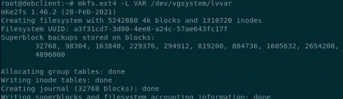
Transcription des commandes et informations utiles visibles
mkfs.ext4 -L VAR /dev/vgsystem/lvvar
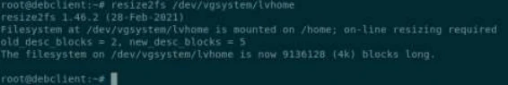
Transcription des commandes et informations utiles visibles
resize2fs /dev/vgsystem/lvhome
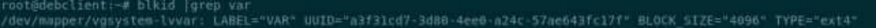
Transcription des commandes et informations utiles visibles
blkid | grep VAR
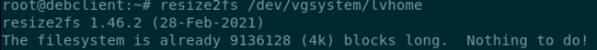
Transcription des commandes et informations utiles visibles
resize2fs /dev/vgsystem/lvhome
The filesystem is already 9136128 (4k) blocks long. Nothing to do!II. Migration du répertoire /var
Migrer le répertoire /var vers le volume logique var tout en préservant les données existantes.
Conseils de mise en œuvre :
- Faites un snapshot de votre VM
→ Ce snapshot permettra un retour arrière en cas d'erreur
- Vérifier l'utilisation de /var avant de copier les fichiers (lsof).
La commande lsof (List Open Files) permet de dénombrer les fichiers en cours d'utilisation par des processus.
En filtrant (grep) sur le répertoire /var, on dénombre plusieurs centaines de lignes
- Prendre toutes les précautions nécessaires pour éviter l’écriture dans l’arborescence de /var afin de pouvoir copier correctement les fichiers
→ La méthode la plus simple pour stopper les nombreux processus utilisant des fichiers présents sous /var est de passer en mode rescue.
Si un service tel systemd-journald utilise encore des fichiers, vous pouvez le stopper avec la commande adéquat
- Utiliser un montage temporaire pour pouvoir copier les données de l'ancien vers le nouveau volume
La création d'un sous dossier dans /mnt est optionnelle La commande mount permet ensuite d’effectuer le montage temporaire

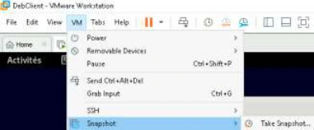

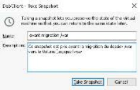

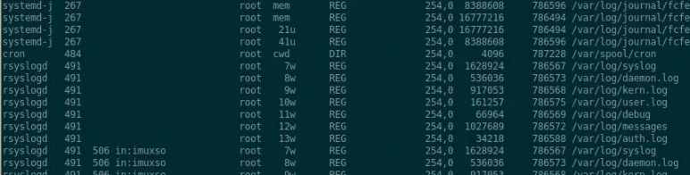

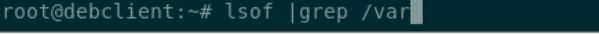
Transcription des commandes et informations utiles visibles
lsof | grep /var
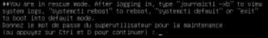

Transcription des commandes et informations utiles visibles
systemctl stop systemd-j*
lsof | grep /var
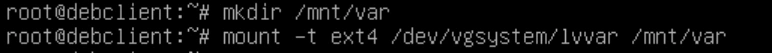
Transcription des commandes et informations utiles visibles
mkdir /mnt/var
mount -t ext4 /dev/vgsystem/lvvar /mnt/var
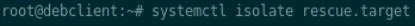
Transcription des commandes visibles
systemctl isolate rescue.targetLa commande findmnt affiche bien l'utilisation de /mnt/var comme point de montage pour lvvar
- Copier les données en préservant les permissions
Les options utiles de la commande cp ici sont : -p : préserver les permissions et groups et utilisateurs propriétaires des fichiers
-r : la récursivité permet de copier tous les sous-dossiers et leurs contenus
-v pour avoir un affichage verbeux.
Une fois l'opération achevée on peut démonter le LV
Une fois cela fait, on remonte le volume logique immédiatement sur /var
Puis relancer la cible graphique pour verifier le bon fonctionnement du système.
On s’assure que le LV est bien monté sur /var
Il est possible de vérifier le bon fonctionnement par exemple avec les fichiers journaux dans /var/log
III. Automatisation du montage au démarrage : sur la station avec environnement graphique
Activer le montage automatique au démarrage du volume logique lvvar vers /var
Editer le fichier /etc/fstab En dernière ligne, le LV est appelé par le LABEL apposé sur le file-system
→ On repasse en mode rescue pour tester AVANT de redémarrer
Ne pas oublier de stopper les éventuels process encore consommateurs de fichiers sur /var

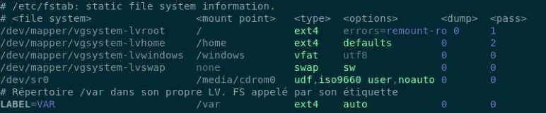

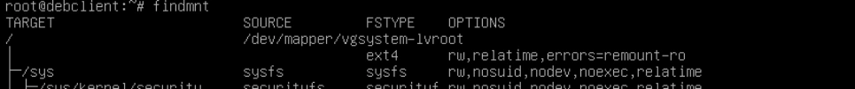
Transcription des commandes et informations utiles visibles
findmnt
Transcription des commandes et informations utiles visibles
/mnt/var /dev/mapper/vgsystem-lvvar ext4 rw,relatime
Transcription des commandes et informations utiles visibles
systemctl isolate graphical
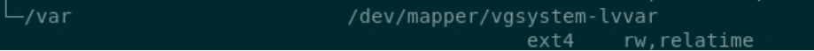
Transcription des commandes et informations utiles visibles
/var /dev/mapper/vgsystem-lvvar ext4 rw,relatime
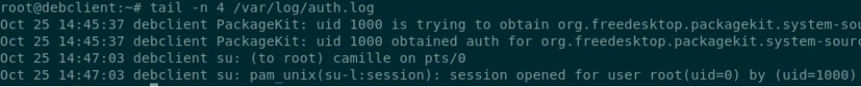
Transcription des commandes et informations utiles visibles
tail -n 4 /var/log/auth.log
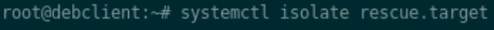
Transcription des commandes et informations utiles visibles
systemctl isolate rescue.target
Transcription des commandes et informations utiles visibles
systemctl stop systemd-j*
lsof | grep /var
Transcription des commandes visibles
cp -rpv /var/* /mnt/var/.
Transcription des commandes visibles
umount /mnt/var
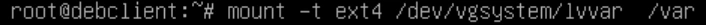
Transcription des commandes visibles
mount -t ext4 /dev/vgsystem/lvvar /varOn défait le montage manuel qui avait été fait sur /var
On relance le montage de /var, mais ce coup-ci sans options ni autre argument, ce qui implique la lecture des informations du fichier /etc/fstab
Si tout cela fonctionne bien, on peut enfin redémarrer le système en guise de dernière vérification.
En cas d’erreur, reprendre ces étapes, avec retour sur le snapshot préalablement pris si besoin.

Transcription des commandes visibles
umount /var
Transcription des commandes visibles
mount /varRéférence du document : 1n4zSxPb4C7LiPn3-KO0a3IktlZBdqnBc · SHA-256 875c895cdf2ad435…
Complément IA / externe au cours — fiche pédagogique du portail
Cette fiche contient une reformulation et des aides d’apprentissage rédigées par IA. Elle est distincte de la transcription des documents du Drive et ne la remplace pas. Les schémas de synthèse de cette fiche sont des illustrations IA / externes au cours, sauf les captures explicitement attribuées à un document source.
Cours optimisé — reformulation pédagogique du support et des TP associés. Les exemples du parcours conservent leur contexte Debian 11 ; les corrections et actualisations sont identifiées comme compléments externes. Les transcriptions intégrales se consultent dans l’onglet Original.
Objectifs¶
- Identifier, formater et agrandir les systèmes de fichiers du TP.
- Préparer une copie stable de
/varet vérifier ses données et attributs. - Déclarer le montage, tester sa persistance et prévoir un retour arrière.
Du volume aux fichiers¶
Le système de fichiers organise les données, les répertoires et leurs métadonnées sur un volume. Le support utilise les notions de blocs, d’inodes et d’entrées de répertoire. Un nom dans un répertoire renvoie à un inode ; l’inode décrit notamment type, propriétaire, droits, dates et références aux données. Le nom du fichier ne réside pas simplement dans l’inode.
Le nombre de liens physiques renseigne les entrées qui désignent un même inode. La place n’est pas nécessairement rendue dès que le dernier nom disparaît : un processus peut conserver le fichier ouvert. Cette précision explique les divergences possibles entre fichiers visibles et occupation du disque.
Dates et familles de systèmes de fichiers¶
| Date | Sens |
|---|---|
atime |
Accès, selon les options et la politique de mise à jour |
mtime |
Modification du contenu |
ctime |
Modification de l’état / métadonnées de l’inode, pas date de création |
Le support compare ext2 sans journal, ext3 avec journal et ext4, puis les formats utilisables pour des échanges avec d’autres systèmes. Une journalisation facilite la cohérence après incident ; elle n’est ni une sauvegarde ni une garantie que toute écriture applicative a atteint le disque.
Clarification externe — valeurs historiques
La taille d’inode de 128 octets et les limites des systèmes de fichiers du support ne sont pas des constantes applicables à tous les volumes. Les paramètres dépendent du format et de sa création ; ext4 est une évolution de la famille ext, pas un format sans lien avec ext3. Références : ext4(5) et inode(7).
Identifier avant de formater¶
lsblk -f relie périphériques, types de systèmes de fichiers, étiquettes et montages. blkid lit des identifiants ; findmnt décrit les montages effectifs. Comparer ces trois vues avec LVM avant de viser un LV. Formater remplace les structures du système de fichiers ciblé : vérifier son identité et les données à préserver.
mkfs.ext4 -L VAR /dev/vggroup1/lvvar
tune2fs -l /dev/vggroup1/lvvar
tune2fs -L VAR /dev/vggroup1/lvvar
Le premier exemple crée un ext4 avec étiquette ; le troisième change l’étiquette d’un ext existant. Ce ne sont pas des opérations équivalentes. mkfs.ntfs, également cité, suppose les outils correspondants disponibles. tune2fs peut examiner ou régler les paramètres ext, dont les intervalles de contrôle ; il ne s’utilise pas comme outil universel pour tous les formats.
Agrandir et vérifier¶
resize2fs adapte les systèmes ext compatibles. Dans le TP, il permet à home d’utiliser la capacité de LV ajoutée au module 8. S’il a déjà été adapté par une extension -r, aucun agrandissement supplémentaire n’est nécessaire. fsck est une famille de vérificateurs : choisir le bon outil et l’état de montage requis, généralement démonté pour une réparation. Ne pas réparer à l’aveugle un système de fichiers monté en écriture.
Monter et démonter¶
Créer auparavant le point de montage. Monter un volume sur un répertoire masque temporairement le contenu auparavant visible sous ce répertoire ; cela ne le copie pas et ne le supprime pas. Une erreur « occupé » au démontage demande d’identifier les processus ou répertoires courants concernés.
Le support décrit ro/rw, exec/noexec, suid/nosuid, sync/async et remount. Ces options affectent le montage ; leur choix doit correspondre à l’usage. remount modifie un montage existant et ne remplace pas un premier montage.
Déclarer un montage durable¶
/etc/fstab comporte six champs : source, point de montage, type, options, champ dump et ordre de vérification. La source peut être un chemin, UUID= ou LABEL=. L’UUID est généralement plus stable que l’ordre /dev/sdX, mais un clone peut dupliquer un identifiant : vérifier le volume réel.
Cette entrée reprend le principe du TP, avec une étiquette unique sur la machine. Les options defaults regroupent des comportements comme lecture-écriture, montage automatique et exécution ; elles ne constituent pas une politique adaptée à tous les usages. Tester mount /var, puis findmnt /var, avant de compter sur le prochain démarrage. Le test lit l’entrée fstab au lieu de répéter tous les paramètres manuellement.
TP — Migrer /var en conservant les données¶
Préparer les systèmes de fichiers¶
Dans la VM de formation, prendre le snapshot demandé avant toute modification. Identifier le volume lvvar créé au module 08 et le type du système de fichiers de /home. Le formatage ci-dessous s’applique uniquement au nouveau lvvar vide. Le TP agrandit le système de fichiers de lvhome séparément et suppose ext4.
lsblk -f
sudo lvs
findmnt --mountpoint /home
sudo mkfs.ext4 -L VAR /dev/vgsystem/lvvar
sudo blkid /dev/vgsystem/lvvar
sudo resize2fs /dev/vgsystem/lvhome
df -hT /home
Si resize2fs indique que le système de fichiers occupe déjà tout le volume, relever le message et les tailles. Vérifier le label VAR avec blkid. Manuel Debian de resize2fs
Copier à partir d’un état stable¶
- Relever les processus qui utilisent
/var. Passer en secours depuis la console de la VM, puis s’assurer que les services concernés n’écrivent plus dans cette arborescence. Arrêter uniquement les unités identifiées si le mode secours ne suffit pas. - Monter
lvvardans un répertoire de travail et vérifier la source avant la copie. Copier le contenu avec/var/.pour inclure les entrées masquées. Contrôler les répertoires, fichiers et attributs attendus avant de démonter le montage provisoire.
sudo lsof | grep '/var/'
sudo mkdir -p /mnt/var
sudo mount -t ext4 /dev/vgsystem/lvvar /mnt/var
findmnt --mountpoint /mnt/var
sudo cp -a -- /var/. /mnt/var/
sudo du -xsh /var /mnt/var
sudo ls -ld /var/log /mnt/var/log
sudo umount /mnt/var
La présence des mêmes dossiers et de tailles proches aide à contrôler la copie. Vérifier aussi quelques fichiers et leurs propriétaires. L’ancien contenu de /var demeure sur le système de fichiers racine après le montage par-dessus.
Valider le montage définitif¶
Sauvegarder /etc/fstab. Dans la VM, ajouter l’entrée demandée en vérifiant que le label est unique. Le sixième champ indique un contrôle au démarrage après la racine.
En mode secours, valider le fichier et tester le montage avant de redémarrer.
Revenir à la cible habituelle, vérifier qu’un service du scénario écrit dans son journal, puis vérifier le montage après redémarrage. En cas d’échec, revenir en secours, arrêter les écritures, restaurer le fichier fstab sauvegardé et démonter le nouveau /var. Le contenu précédent redevient alors visible. Si l’état de la VM est incertain, revenir au snapshot. Manuel Debian de fstab · Manuel de findmnt
Mesurer l’espace¶
df renseigne le système de fichiers, df -i ses inodes et du l’espace des objets parcourus. La taille affichée par ls -l pour un répertoire n’est pas la taille récursive de ses contenus, ni la taille de son inode. Des fichiers supprimés encore ouverts, les métadonnées et les permissions de parcours peuvent expliquer des écarts.
Schéma explicatif — complément pédagogique¶
Illustration IA / externe au cours — schéma pédagogique de synthèse.
À retenir¶
L’agrandissement d’un LV et celui de son système de fichiers sont deux actions. Une migration de /var exige des écritures arrêtées, un montage temporaire vérifié et un test avant redémarrage.
Autoévaluation¶
- Monter un volume sur
/varcopie-t-il l’ancien contenu ? ctimeindique-t-il la création du fichier ?- Quelle commande observe les inodes disponibles ?
- Pourquoi utiliser
/var/.comme source de copie dans l’atelier ? - Quel enchaînement valide l’entrée
fstabavant de relancer les services ?
Réponses commentées
- Non ; la migration nécessite une copie et une phase de validation.
- Non, c’est la modification de l’état de l’inode.
df -i.- La copie prend le contenu du répertoire, y compris les entrées cachées, vers le système de fichiers monté temporairement.
- Vérifier le fichier avec
findmnt --verify, monter/var, puis vérifier avecfindmnt --mountpoint /varque la source et le type sont ceux attendus.
Pour travailler ce module¶
M09 — Gestion des espaces de stockage — File System
20 questions
Teste tes connaissances sur ce module.